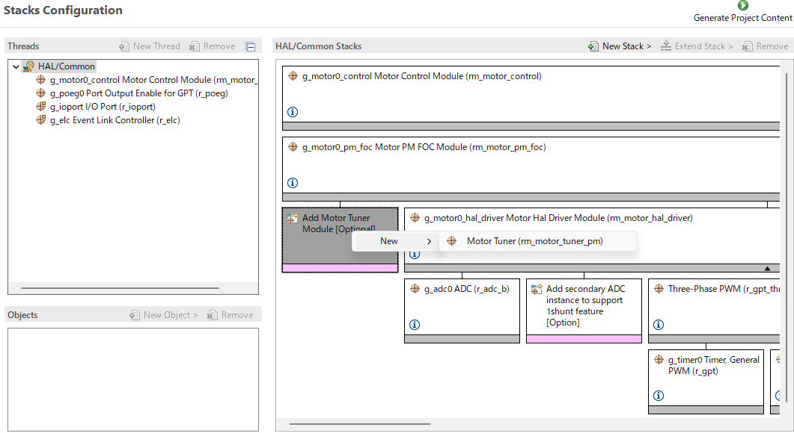
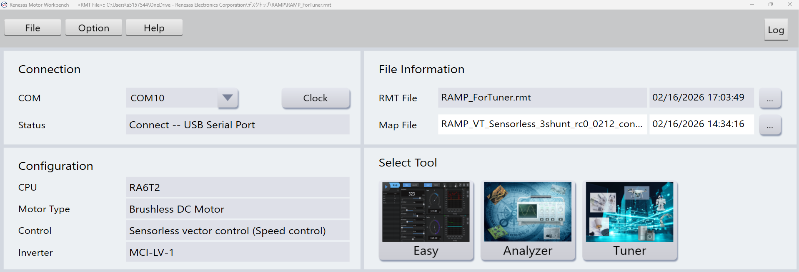
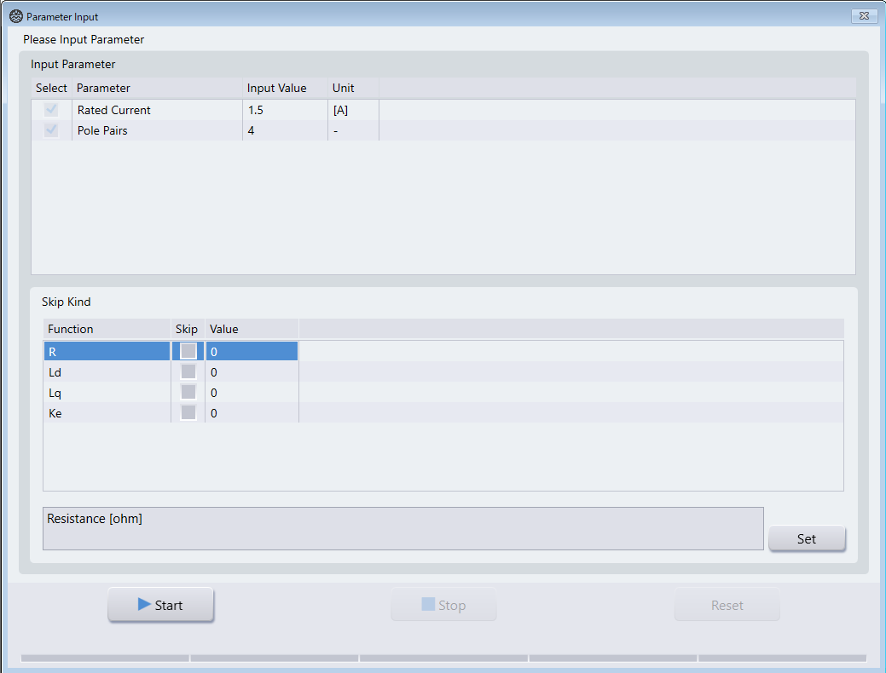
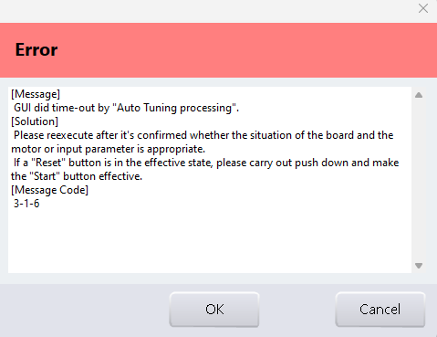
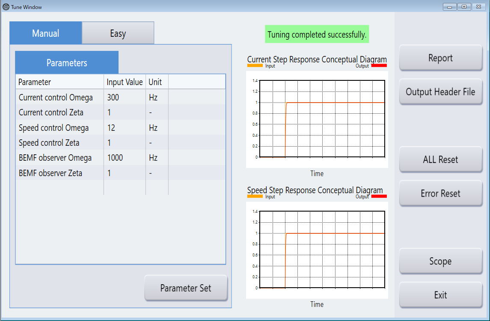
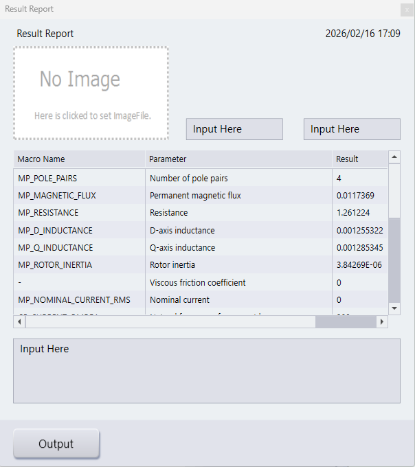

Tuner function measures motor parameters (such as R and L) automatically, and tunes various control parameters (such as PI control gains) required for sensorless control. If the motor parameter is available from the motor manufacturer, it is recommended to use those parameters. Motor parameters can also be measured using an LCR meter. For details, refer to the Motor Parameter section.
This section describes the set-up procedure for motor parameter tuning using the Tuner function. The overall operation flow is illustrated in the figures referenced in the following sections.
configuration.xml file.
Fig. 1 Adding Motor Tuner Stack in e² studioThe initial window of Renesas Motor Workbench is shown in Fig. 2.

Fig. 2 Renesas Motor Workbench Start WindowAfter launching the Tuner tool, the Parameter Input screen appears (see Fig. 3).
In the Input Parameter section:
These values are typically described in the motor specifications or on the motor label.
If motor parameters (such as resistance or inductance) are already known, they can be excluded from automatic measurement by enabling the corresponding items in the Skip Kind tab.
Press the Start button to begin tuning.

Fig. 3 Tuner Parameter Input Screen
After tuning is finished, the Tune Window will appear, as shown in Fig. 5.
r_mtr_control_parameter.hr_mtr_motor_parameter.hThe obtained parameters can be used directly in the motor control software by updating the corresponding motor parameter and control parameter header files.

Fig. 5 Tune Window
Table 1 lists the parameters that can be obtained using the Tuner function.
Table 1 List of Output Parameters Obtained by Tuner Function
| Macro | Description | Unit |
|---|---|---|
| MP_POLE_PAIRS | Number of pole pairs | - |
| MP_MAGNETIC_FLUX | Permanent magnetic flux | [Wb] |
| MP_RESISTANCE | Resistance | [ohm] |
| MP_D_INDUCTANCE | D-axis inductance | [H] |
| MP_Q_INDUCTANCE | Q-axis inductance | [H] |
| MP_ROTOR_INERTIA | Rotor inertia | [kg·m²] |
| MP_NOMINAL_CURRENT_RMS | Nominal current | [Arms] |
| (N/A) | Viscous friction coefficient | [Nm/(rad/s)] |
| CP_CURRENT_OMEGA | Natural frequency for current loop | [Hz] |
| CP_CURRENT_ZETA | Damping ratio for current loop | - |
| CP_SPEED_OMEGA | Natural frequency for speed loop | [Hz] |
| CP_SPEED_ZETA | Damping ratio for speed loop | - |
| CP_E_OBS_OMEGA | Natural frequency of BEMF observer | [Hz] |
| CP_E_OBS_ZETA | Damping ratio of BEMF observer | - |
| CP_PLL_EST_OMEGA | Natural frequency of PLL speed estimate loop | [Hz] |
| CP_PLL_EST_ZETA | Damping ratio of PLL speed estimate loop | - |
| CP_ID_DOWN_SPEED_RPM | Speed to start decreasing Id (mechanical) | [rpm] |
| CP_ID_UP_SPEED_RPM | Speed to start increasing Id (mechanical) | [rpm] |
| CP_MAX_SPEED_RPM | Maximum speed (mechanical) | [rpm] |
| CP_SPEED_LIMIT_RPM | Over speed limit (mechanical angle) | [rpm] |
| CP_OL_ID_REF | Id reference when low speed | [A] |